Paradox ATS Bulk Tools
Bulk resume downloads and candidate disposition for Paradox.ai. One extension, two power tools.
Download ExtensionBulk Resume Download
Download as a zip of individual PDFs or a single merged PDF. Filter by stage, set a limit, and page through results.
Bulk Disposition
Move dozens or hundreds of candidates at once. Select candidates, pick a disposition status, and go.
Stage Filtering
Pick which journey stage to scan — Candidate Review, Meets Qualifications, Recruiter Screen, and more.
Fast & Parallel
Processes 5 candidates at a time with automatic retry. Handles 300+ candidate lists with ease.
Installation Guide
Takes about 2 minutes. No coding required. Choose your browser:
Download the extension
Click the Download Extension button above. A file called paradox-tools.zip will download.
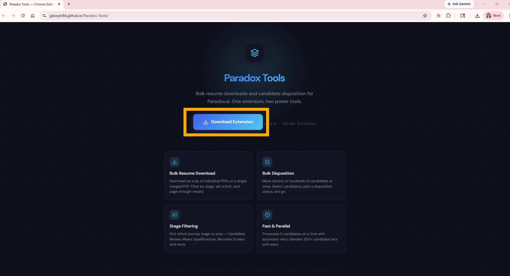
Find the downloaded file
Click the downloads icon in the top-right corner of your browser, then click the folder icon next to paradox-tools.zip to open it in File Explorer.
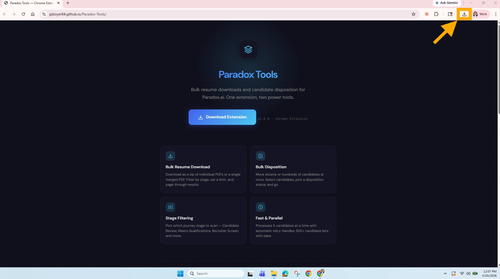
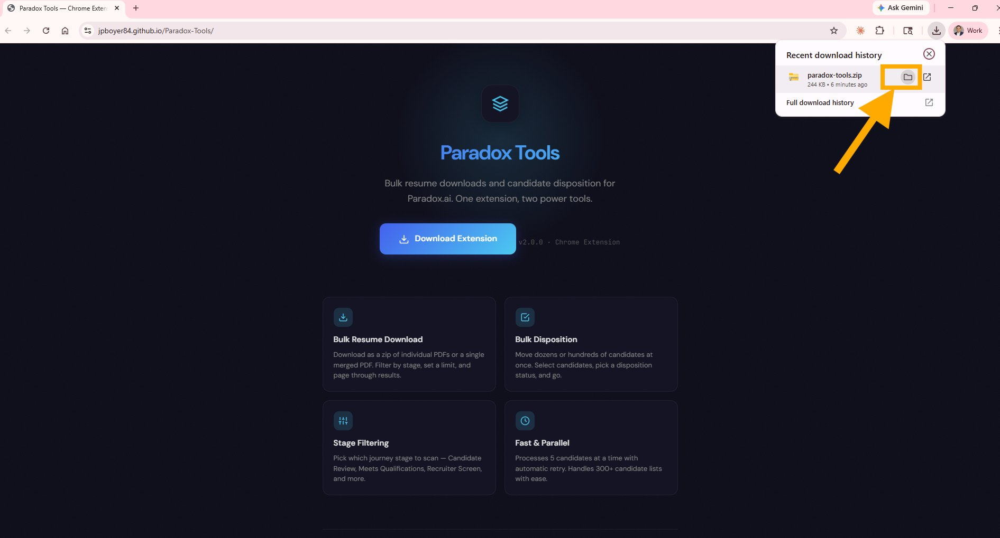
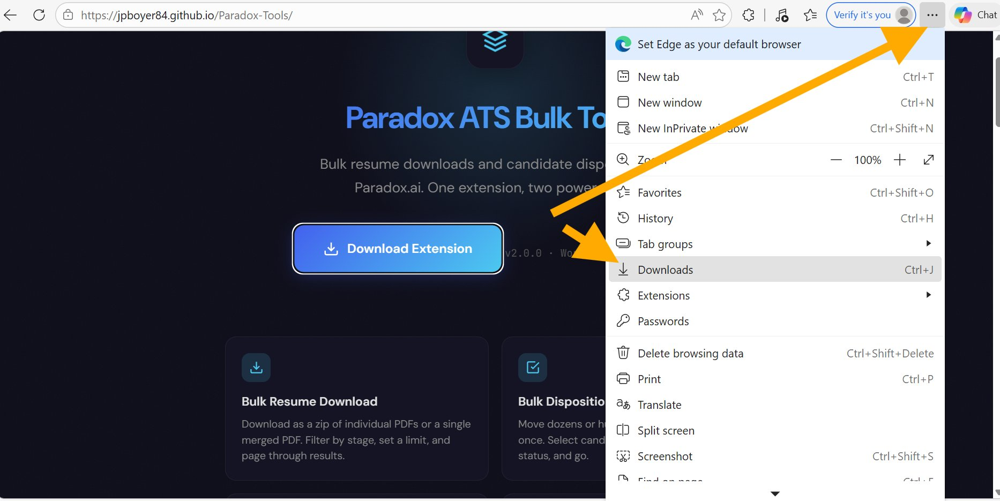
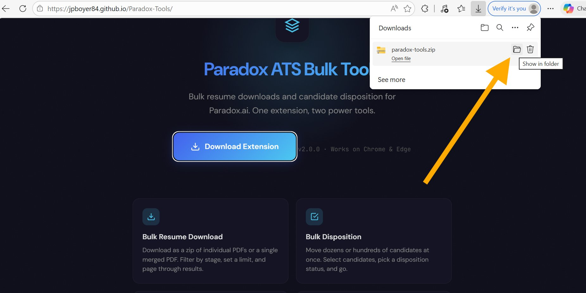
Move the zip to Documents
Drag the paradox-tools.zip file from Downloads into your Documents folder. This keeps it in a safe place that won't get accidentally deleted.
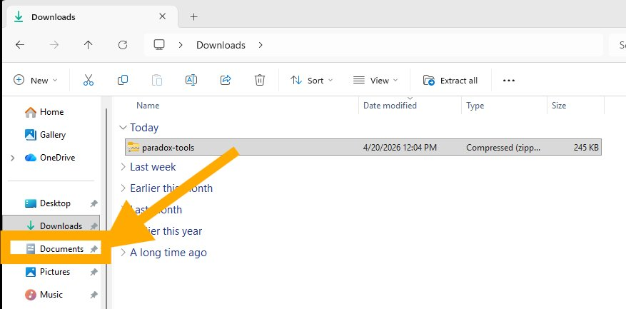
Unzip the file
Right-click the zip file and select Extract All..., then click Extract.
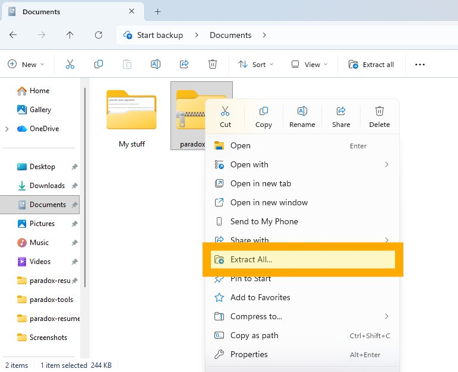
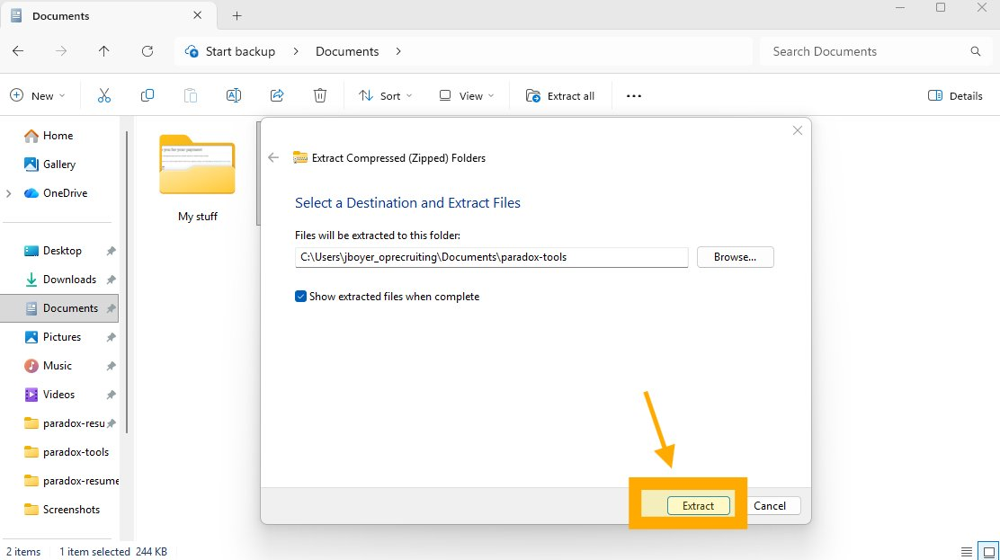
Open ChromeEdge Extensions
Type chrome://extensionsedge://extensions into the address bar and press Enter.
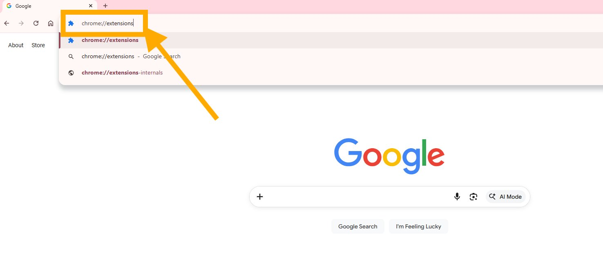
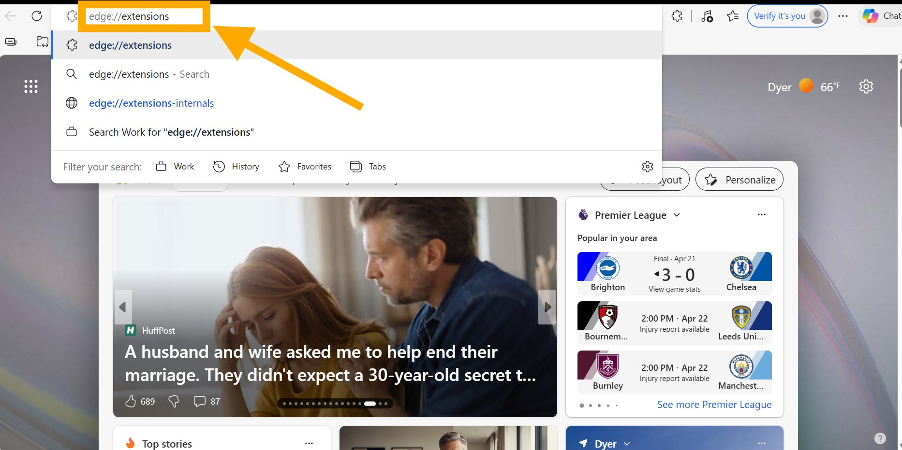
Enable Developer Mode
Toggle Developer mode ON in the top-right cornerin the bottom-left sidebar. New buttons will appear.
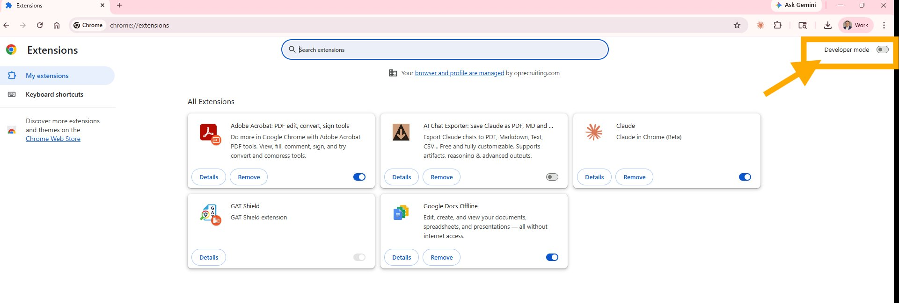
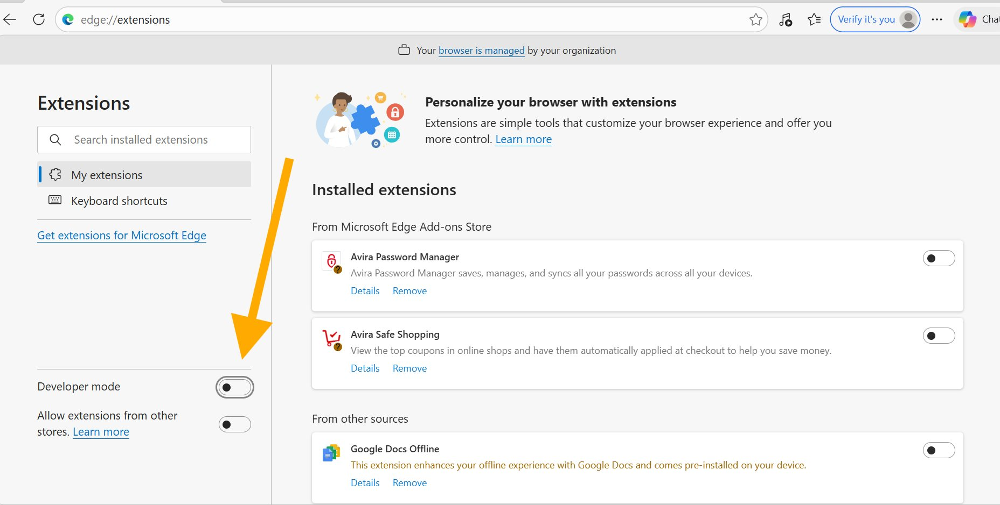
Load the extension
Click Load unpacked.
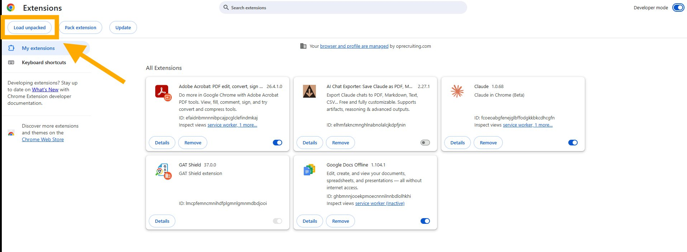
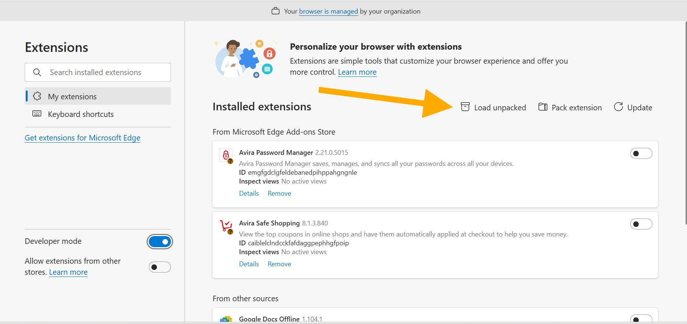
Select the folder
Navigate to your Documents folder, open the paradox-tools folder, select the paradox-resume-downloader folder inside, and click Select Folder.
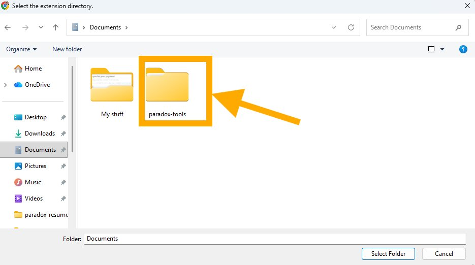
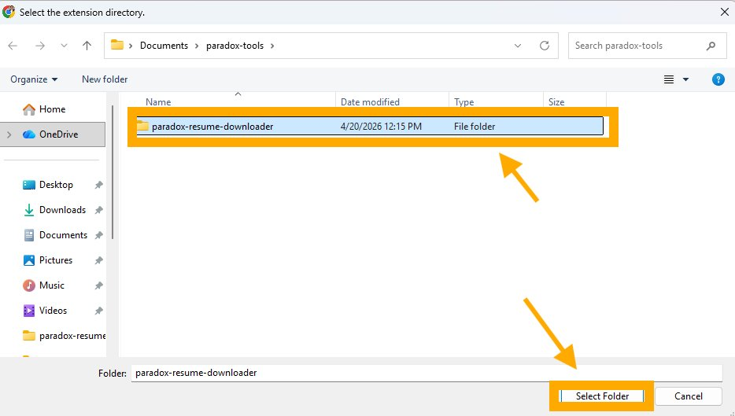


You're done!
Go to Paradox.ai and open any job's Centric View. You'll see the Paradox ATS Bulk Tools icon in the bottom-right corner — click it to get started.
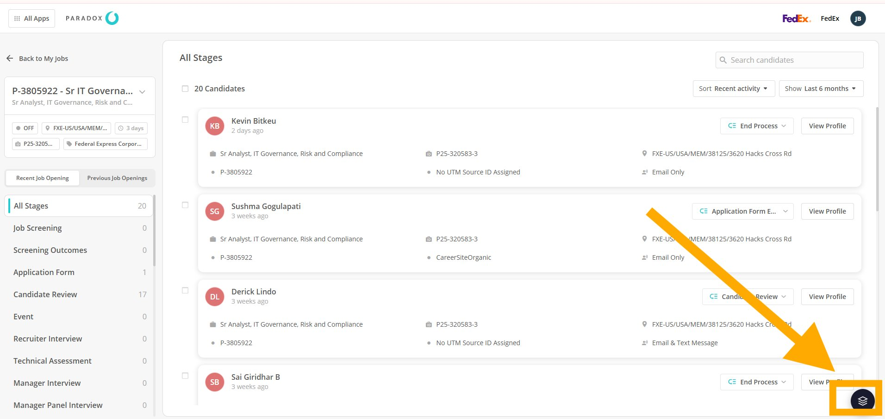